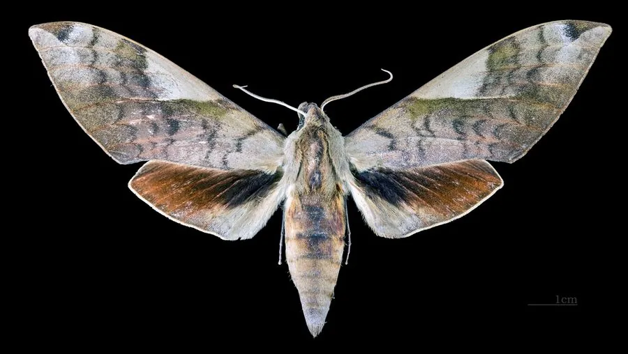

昆虫 · 动物界
豆天蛾 Clanis bilineata

翅面黄褐、前翅有波状横线的大型天蛾，幼虫取食大豆，是豆田主要害虫，其幼虫在苏北一带被当作食材。
- 分类
- 门节肢动物门纲昆虫纲目鳞翅目科天蛾科属豆天蛾属
- 栖息环境
- 大豆田、草丛、林缘和村落附近
- 地理分布
- 中国大部分地区，以及日本、朝鲜半岛和印度
- 保护级别
- 尚无保护级别；为豆田主要害虫，局部当作食材利用
物种志
豆天蛾的翅展约十至十二厘米，前翅黄褐色，有数条深褐色的波状横线自前缘斜向后缘，顶角附近有一块深色斑，后翅暗褐色，基部与内缘色较浅。它的身体黄褐色，腹部有深色横纹，触角呈羽状。雌蛾体型较大，腹部肥满，雄蛾触角更宽。成虫多在黄昏活动，飞行迅速，常在豆田和草丛间穿梭。
它分布于中国大部分地区，以及日本、朝鲜半岛和印度，栖息在大豆田、草丛、林缘和村落附近，成虫夜间活动，有趋光性。幼虫以大豆、绿豆等豆科植物为食，孵化后啃食叶片，从叶缘吃到只剩叶脉，是豆田的主要害虫；老熟幼虫入土化蛹，一年发生一至两代，以幼虫在土中越冬。在苏北、鲁南一带，人们把它的幼虫叫作豆丹，作为地方食材烹食。它尚无保护级别，田间防治以农业和生物措施为主。
形态与习性
- 翅展约十至十二厘米，前翅黄褐色
- 横线前翅有数条深褐色波状横线
- 食性幼虫取食大豆、绿豆等豆科叶片
- 危害幼虫从叶缘啃食，严重时只剩叶脉
- 越冬老熟幼虫入土化蛹，以幼虫在土中越冬
- 利用苏北、鲁南一带把幼虫作地方食材
趣味知识
- 豆天蛾的幼虫在苏北被叫作豆丹，是当地有名的时令吃食。
- 它前翅的横线像一圈圈水波，静止在豆叶上时并不显眼。
- 老熟幼虫会钻进土里越冬，来年春天再化蛹羽化。